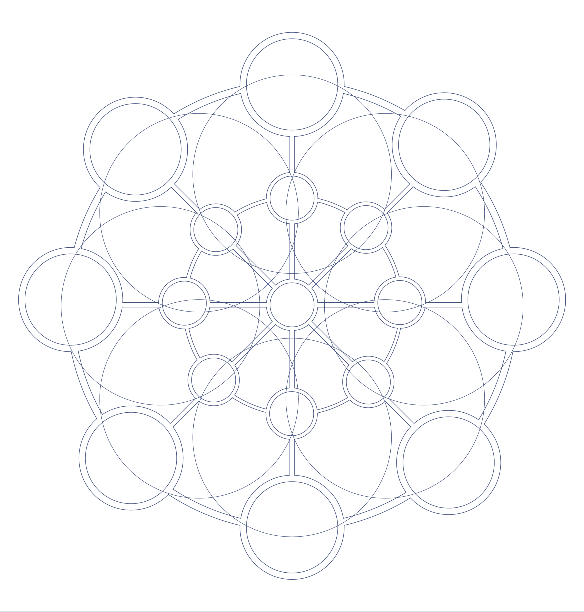

Keep your domains separate — brands, clients, archives, memory, legal, platform, personal. Mycelium for Obsidian is one lightweight, local MCP that gives your AI an operator layer over your whole knowledge ecosystem — it finds, reads, connects and maintains notes across every vault you configure.
This is the strategic center. Each world stays walled off and understandable — and your AI still operates across all of them, deliberately. Obsidian stays the place you think and write; Mycelium is the local operations layer the AI works through. Your knowledge keeps its boundaries; the AI gets one way in.
The walls stay up for you. The AI works across the whole ecosystem.
A platform vault, a client-project vault, a brand vault, an archive, a memory vault, a legal/process vault. You never collapse everything into one enormous vault just so an AI can find it.
Cross-vault tools: search every vault at once, find a note from only its title, trace links between vaults, pull ecosystem stats — and optionally search all vaults by meaning.
The toolset is broad; the benefit is simple. Your AI can find, read, organize, write, query and maintain your own notes across separate vaults — without moving your vault into a hosted knowledge base.
By text, by meaning, by tag, by file name, by frontmatter property — in one vault or all of them at once.
Whole files, outlines, frontmatter, backlink context — follow link chains across a domain to see why a note matters.
Create, update, move, rename with wikilinks kept pointing right. Edit one section or one property in place — precise, surgical edits.
Properties, tags and Bases turn tagged notes across domains into typed, filterable tables.
Health reports, orphans, broken links, stale notes — the quiet entropy, surfaced before it spreads.
Mycelium runs on your machine; notes stay markdown on disk; embeddings, when used, run on local Ollama. What leaves your machine depends on the AI client you connect.
Every tool takes an optional vault; cross-vault tools act on all at once. 74 work even when Obsidian is closed; 28 reach inside the running app.
The QIAI live test: narrowing a large multi-vault corpus to a cited synthesis. This proves the search-and-structure workflow — measured, not estimated.
Read 0.16% of the corpus and produced a fully-cited synthesis in about 12 minutes.
Honest note: in this run the semantic tier was unavailable in that runtime, so Mycelium fell back to lexical and context-aware search and finished the task. These numbers prove the search-and-structure workflow; semantic search is measured separately.
Mycelium runs locally. Your vaults stay as markdown on disk. Semantic embeddings, when enabled, use local Ollama. What leaves your machine depends on the AI client and model you connect to it. Like the mycelial network under a forest, Mycelium connects what you already have — your model routing still depends on the client you choose.
Independence from interdependence. One stratum of a larger organic system — and it stands on its own.
A few things are designed but not yet shipped — see the full list on Architecture. If you run a real vault, your pull on them is worth more than any roadmap.
Reading the link graph to tell a hub from a root from a leaf. Today the graph tools are read-only — backlinks, orphans, broken links — they navigate, they don’t rank.
Treating folders from different filesystem locations as one working vault surface — operator-controlled, read-only first. The productized API is the open question.